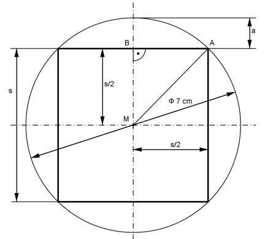

Aufgabe 94 Aus einem 18 cm langen Rundstahl mit einem Durchmesser von 7 cm soll der größtmögliche quadratische Vierkant ausgefräst werden? Wie groß sind die Anstelltiefe a des Fräsers und das Volumen V des fertigen Vierkants?  Satz von Pythagoras im Dreieck MAB: AM = 7 cm/2 = 3,5 cm MA² = MB² + AB² 3,5² = (a/2)² + (a/2)² = s²/4 + s²/4 = s²/2 |*2 s² = 24,5 |√ s = 4,95 cm --> s/2 = 4,95/2 cm = 2,475 cm Anstelltiefe a = r - s/2 = 3,5 cm - 2,475 cm = 1,03 cm V = G * h V = s² * h = 4,95² cm² * 18 cm = 441 cm³